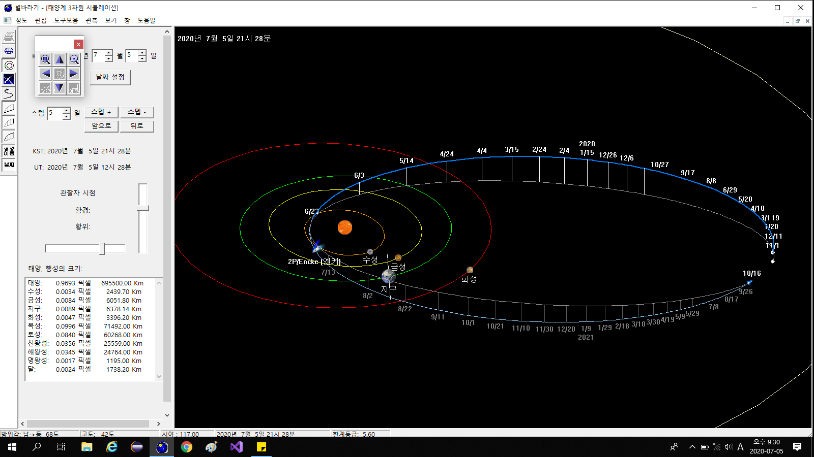

별바라기 홈 >
도움말
태양계 3차원 시뮬레이션
태양계 3차원 시뮬레이션 윈도에서는 태양계 행성의 움직임 및 혜성의 움직임을 입체적으로 보여준다.
태양계 3차원 시뮬레이션 윈도는 컨트롤 윈도와 시뮬레이션 윈도로 구성되어 있다.
|

|
|
태양계 3차원 시뮬레이션: 2P/Encke(엥케) 혜성의 궤도. 왼쪽은 컨트롤 윈도, 오른쪽은 시뮬레이션 윈도이다.
|
컨트롤 윈도
컨트롤 윈도에서는 시뮬레이션 윈도의 시간 및 관찰자 시점(View Point)을 조절한다. 각 항목은 다음과 같은 기능을 한다.
- 날짜 설정: 시뮬레이션 윈도의 시간을 해당일의 KST 기준 0시로 맞춘다.
- 스텝: 시뮬레이션의 시간 간격을 정해준다. '일' 단위를 기준으로 하며 소수로도 표현할 수 있다.
- 스텝+: 시뮬레이션 윈도의 시간을 정해진 스텝만큼 더해준다. Ctrl 키를 누른 상태에서 '스텝+' 버튼을 누르면 정해진 스텝의 1/10을 더해준다.
- 스텝-: 시뮬레이션 윈도의 시간을 정해진 스텝만큼 빼준다. Ctrl 키를 누른 상태에서 '스텝-' 버튼을 누르면 정해진 스텝의 1/10을 빼준다.
- 앞으로: 시간이 전진하는 방향으로 시뮬레이션을 시작한다. 스텝의 크기를 조절함으로써 시뮬레이션의 속도를 조절할 수 있다.
앞으로 버튼을 한 번 누르면 앞으로 버튼은 정지 버튼으로 바뀌고 정지 버튼이 눌리거나, 뒤로 버튼이 눌릴 때까지 전진 방향의 시뮬레이션은 계속된다.
- 뒤로: 시간이 후퇴하는 방향으로 시뮬레이션을 시작한다. 스텝의 크기를 조절함으로써 시뮬레이션의 속도를 조절할 수 있다.
뒤로 버튼을 한 번 누르면 뒤로 버튼은 정지 버튼으로 바뀌고 정지 버튼이 눌리거나, 앞으로 버튼이 눌릴 때까지 후진 방향의 시뮬레이션은 계속된다.
- KST, UT: 시뮬레이션 윈도의 시각을 나타낸다.
- 관찰자 시점(View Point): 태양계를 보는 시점을 결정하며 두 개의 스크롤 바(황경, 황위)를 움직여서 시점을 바꿀 수 있다.
혜성의 궤도 표현
혜성의 궤도를 보기 위해서는 다음의 순서를 따른다.
- [보기][혜성....] 메뉴를 선택한다. 또는 도구바에서 혜성을 클릭한다.
- 혜성 윈도에서 혜성을 선택한다. 만약 새로운 혜성 자료를 삽입하고자 할 때는 혜성을 참조하시오.
- 디폴트로 1년 동안의 혜성의 위치가 보여진다. 궤적 구간을 바꾸고자 할 때는 [도구모음][궤적그리기...]를 선택하거나 도구바에서 궤적 아이콘을 클릭하여 원하는 시간으로 궤적 구간을 바꿀 수 있다.
(궤적 그리기 참조)
- 관찰자 시점을 변경하여 혜성의 궤적을 잘 관측할 수 있는 위치를 찾는다.
별바라기 홈 최초 작성: 2026년 11월 01일, 최종 변경: 2026년 11월 01일